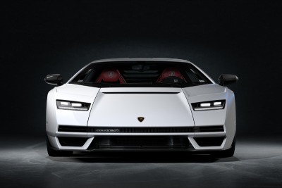

|  |
Lamborghini Countach
|
The Lamborghini Countach is a legendary high-performance sports car produced by the Italian automaker Lamborghini between 1974 and 1990. It was designed by Marcello Gandini of the Italian design house Bertone and is widely considered to be one of the most iconic and influential sports cars of all time.
The Countach features a mid-engine layout and is powered by a naturally aspirated 4.0-liter V12 engine, which produced between 375 and 455 horsepower depending on the specific model. It was available with a manual transmission only.
The Countach's exterior design was characterized by sharp angles, aggressive styling, and scissor doors that opened upwards. The interior was minimalistic, with a driver-focused cockpit and basic amenities.
The Countach was known for its impressive performance, with a top speed of around 180 mph and a 0 to 60 mph time of around 5 seconds. It was also the first Lamborghini to feature the iconic scissor doors that have since become synonymous with the brand.
Despite being a low production car, the Countach achieved a high level of popularity and became an automotive icon of the 1980s. Its unique and revolutionary design has influenced the styling of many sports cars that followed.